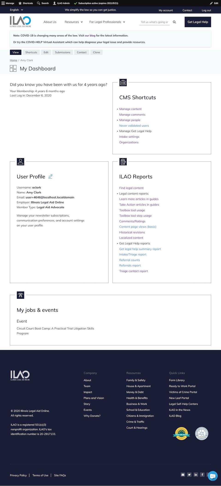

User Dashboard Pages¶
Each user has a profile, or dashboard, page. The contents of that page vary depending on the role(s) the user has.
Community Members¶
Our most limited role is the community member. This role is given to any user who does not have any other role.
This dashboard shows:
A block for their user profile
A block for any referrals made via Get Legal Help
A block for any toolboxes that are saved.
Note
Law students have the same dashboard as community members.
Staff Members¶
The staff dashboard is shown for anyone with the staff or intern role REGARDLESS of any other role they have.
Legal Aid Members¶
The dashboard for legal aid members:
The standard user profile block
A “You Can” block; the content of this block varies depending on whether the user has any elevated organization permissions
A “My legal edits” block
A “My jobs and events” block if the user has any published events or jobs.
LSHC Members¶
The dashboard for legal self-help center navigators has:
The standard user profile block
A “You Can” block with options to manage their organization, location, and services as well as post a job or event.
A “Navigator resources” block that links to our Navigator Resources page
Pro Bono Members¶
The dashboard for pro bono members:
The standard user profile block
A “You Can” block; the content of this block varies depending on whether the user has any elevated organization permissions
A “My legal edits” block
Note
The My jobs and events block does not show currently for pro bono members even if they have posted an active job or event. Also the You Can block has an empty Manage Organizations link that goes to the page not found.